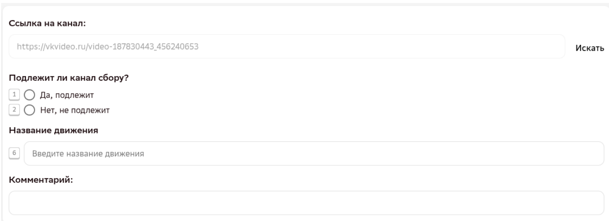

ОБЗОР
Что за проект
Набор открыт сразу на три заявки, объединённые общей механикой: асессор ищет в видеоисточнике ролики, где выполняется одно и то же движение — снятое разными людьми, в разных условиях, но по одной и той же траектории — и собирает их в один комплект из пяти ссылок.
Заявки отличаются тематикой движений:
| Заявка | Тематика | Как называется в Tagme | Что именно ищем |
|---|---|---|---|
| 1075 | Повседневность | Заявка_1075_Тариф_2_Kandinsky_collection_video_yt движения_повседневность_v1_ДатаЛайт | Бытовые действия: умывание, колка дров, работа за клавиатурой и т.п. |
| 1076 | Танцы | Заявка_1076_Тариф_2_Kandinsky_collection_video_yt движения_танцы_v1_ДатаЛайт | Движения и связки движений из конкретных видов танца (балет, танго и т.д.) |
| 1077 | Спорт | Заявка_1077_Тариф_2_Kandinsky_collection_video_yt движения_спорт_v1_ДатаЛайт | Движения и связки движений из конкретных видов спорта (футбол и т.д.) |
В заявке 1075 (повседневность) не собираем танцы, спорт и занятия в зале — под них выделены отдельные заявки 1076 и 1077. Если движение похоже на спортивное или танцевальное — оно туда, а не в «повседневность».
Вся работа — включая сам экзамен и выполнение заданий — идёт в личном кабинете на платформе Tagme. Доступ к личному кабинету выдаёт руководитель группы Data Light.
Ссылки на видео собираются исключительно из видеоисточника, который укажет руководитель проекта, — правило действует по всему набору «Kandinsky collection video yt», для всех трёх заявок.
ТЕРМИНЫ
Главные термины
ГО — главный объект
Человек (или люди), выполняющие движение в кадре. Именно на нём и на предметах, с которыми он взаимодействует, критично отсутствие артефактов сжатия — блочности.
Блочность
Артефакт сжатия видео (макроблоки, пикселизация): из-за нехватки битрейта кадр распадается на отчётливые квадратные сетки или пиксели вместо плавного изображения. Полный чек-лист проверки — на отдельной странице «Блочность».
СТАРТ
Как попасть на проект
20 заданий, проходной балл 85%
Общий для всех трёх заявок вступительный экзамен.
Заказчик сам назначает заявку
После экзамена заказчик распределяет исполнителей по заявкам 1075 / 1076 / 1077.
Один асессор — один пул
Для 1076 и 1077 внутри заявки — пулы по конкретному танцу/спорту; разметчики между собой на пулах не пересекаются.
Проект добавлен, навык назначен
Можно приступать к сбору и разметке видео.
На экзамене вы оцениваете одно видео за раз: ссылка на видео уже дана в задании, вы открываете её, отмечаете «подлежит / не подлежит сбору», вводите название движения и (если «не подлежит») краткий комментарий-обоснование.

В реальной работе — иначе: одно задание в Tagme — это уже готовый комплект из 5 видео одного движения (см. «Правила отбора видео»). Не путайте эти два формата.
- Мелкая моторика — не причина отклонить видео на экзамене. Оценивайте видео только по пунктам инструкции к экзамену (в рабочих заданиях к мелкой моторике, наоборот, нужно относиться осторожно).
- Видео короче 5 секунд и длиннее 30 минут не подходят. Исключение про «одно видео от 2 секунд» относится к рабочим заданиям (комплекту из нескольких ссылок) — см. «Правила отбора видео».
- Технический артефакт — причина отклонить видео: например, когда объекты в кадре «распадаются на полосы». Пример такого видео: видео во «ВКонтакте».
- Блочность на экзамене не оцениваем — только в рабочих задачах.
- Склейки, искусственное ускорение/замедление, коллажи — не допускаются; приближение/отдаление камеры без смены кадра — допускается. Оцениваются так же, как в рабочих заданиях — подробности в «Правилах отбора видео».
Списки пулов по темам — на страницах конкретных заявок (1075 / 1076 / 1077).
ПРОЦЕСС
Как устроена проверка
- Если 1–2 ссылки в задании не проходят проверку — задание не дорабатывается: оно целиком уходит в статус «Битое». Отклонённое движение можно собрать заново отдельным новым заданием.
- Для 1076 и 1077 пулы одному разметчику открываются по одному, а не сразу все — иначе легко не заметить смену темы и продолжить собирать по старой категории. Новый пул подключают и сообщают отдельно по окончании предыдущего.
- Для 1075 следующий пул открывается автоматически.
- Если видео было доступно на момент отправки задания, а потом стало недоступно (или недоступно из другого региона) — ошибку за это не ставят, но валидатор оставляет комментарий.
- Новые уточнения правил применяются только к новым заданиям — задним числом к уже выполненным или проверяемым заданиям они не применяются.